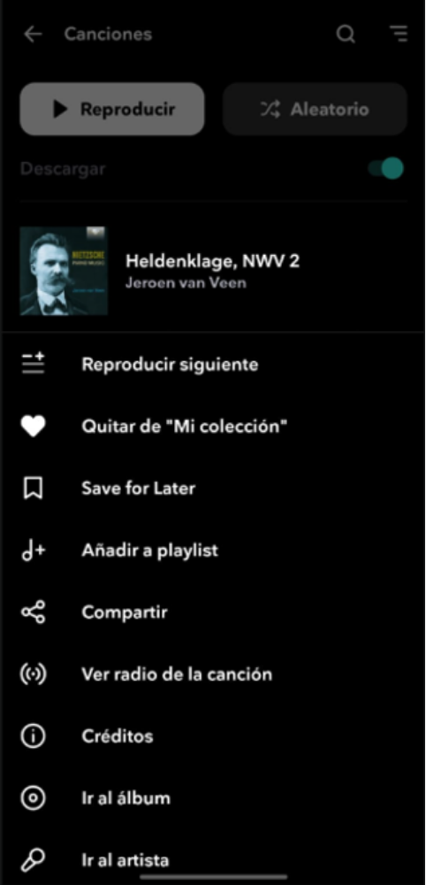
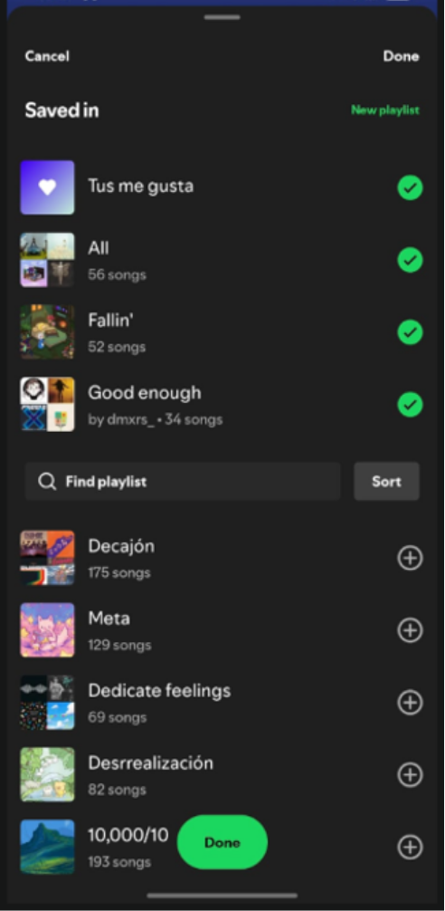

1. Selected application
| App | Tidal, the music streaming service (mobile version). |
| Selected feature | Adding songs to a playlist. |
| The task | I have a list of songs in my collection and I want to put several of them into a new playlist. |
I use Tidal on my phone every day, and building a playlist is one of the things I do the most. It is also where the app frustrates me the most: it only lets me add songs one at a time.
2. Current user flow
Songs → three dots → Add to playlist → find the playlist → select it → start again with the next song. The app’s labels are in Spanish because my phone is.



| Songs to add | 1 | 5 | 10 | 20 |
| Taps in Tidal today (4 per song) | 4 | 20 | 40 | 80 |
In Tidal there is no other method for adding songs. This is how Spotify handles the same task, with two different routes:
Reference: Spotify, Method 1 (from a song)




Reference: Spotify, Method 2 (from the playlist)


3. UX analysis
| How many steps? | Four per song, with no way to batch them. Five songs cost 20 taps and ten songs cost 40. |
| Is the navigation clear? | Each screen is understandable by itself, but the feature is only reachable through the one-song menu. There is no alternative route, such as adding from inside a playlist as in Spotify’s Method 2. |
| Is the feature easy to find? | Not really. “Añadir a playlist” is the fourth item in a menu of nine, with the same visual weight as “Credits” or “Go to album”, even though building playlists is a very frequent action. |
| Are the buttons easy to identify? | The three dots are small, gray and stuck to the right edge, and every row has one, so there is nothing that hints at “select several”. The menu also mixes languages: “Save for Later” appears among Spanish labels. |
| Is the information well organized? | The playlist picker shows cover, name, number of songs and duration, but its order is not alphabetical and nothing explains it. Spotify’s “Saved in” sheet, in contrast, shows with check marks where a song already lives. |
| Confusing moments | Having to search for the same playlist again and again, and losing track of which songs I have already moved. |
| What would I change? | Let me choose the songs first and the playlist once. |
4. Design proposal
I kept Tidal’s dark look and its cyan accent so the proposal feels like the same app, and I changed how the task works: a selection mode for the song list, a bottom action bar and a single playlist sheet.
| Element | Today | Proposal |
| Entry point | Three dots, then a nine-item menu. | Press and hold a song (or tap the ☑ icon in the header) to start selecting. |
| Selection | One song at a time. | Round checkboxes, a tinted row and a “3 selected” counter, plus “All”. |
| Main action | Buried in the menu. | A full-width cyan button at the bottom of the screen, where the thumb already is. |
| Playlist picker | Full-screen list, unexplained order. | Bottom sheet with search, “New playlist” on top and a “Recent” label. |
| Confirmation | None needed, because only one song moves. | A button with the exact count and name (“Add 3 songs to POST”) and a toast with “Undo”. |
5. Proposed user flow
Press and hold a song → tap more songs → Add to playlist → choose the playlist → confirm.
| Songs to add | 1 | 5 | 10 | 20 |
| Tidal today | 4 | 20 | 40 | 80 |
| Proposal (songs + 3) | 4 | 8 | 13 | 23 |
The proposal needs one tap per song plus three fixed taps (Add, playlist, confirm). With a single song it costs the same as today, so nobody loses anything.
Try it yourself
|
Actions so far: 0 |
6. Justification
Current experience → Proposed experience
| 1. Which feature? | Adding songs to a playlist in Tidal’s mobile app. |
| 2. How does it work now? | Three dots, “Añadir a playlist”, find the playlist, select it. Repeated for every song. |
| 3. What problem did I find? | There is no way to add several songs at once, and the effort grows with every song. Spotify offers two alternatives and Tidal offers none. |
| 4. What did I change? | A selection mode, a bottom action bar, one playlist sheet with a clear confirm button and an “Undo” message. |
| 5. Why is it better? | Adding 10 songs drops from 40 taps to 13, and the playlist is chosen once instead of ten times. |
Design decisions
Choose first, decide once. Selecting the songs before the destination is the same mental model as email or photo galleries, so there is nothing new to learn. It fixes the repetition, which is the core of the problem.
Action where the thumb is. The main button sits at the bottom, full width, in the one saturated colour on a dark screen. It is the strongest element in the hierarchy as soon as there is something to act on.
Always show the state. The “3 selected” counter, the check marks and the tinted rows tell me what will be affected, and the button text repeats the count and the playlist name so I do not have to remember anything.
Fewer decisions in the picker. “New playlist” is on top because that is exactly my task, and recent playlists come before the rest, so I rarely need to search.
Mistakes are cheap. A bulk action can go wrong, so the confirmation message includes “Undo”.
Consistency. Same black background, white type, cyan accent, rounded buttons and cover thumbnails as Tidal today. Only the interaction model changes.
What I would explore next. Spotify’s “Saved in” check marks (to see where a song already lives) and an “Add songs” button inside each playlist (Spotify’s Method 2). I left them out to keep this proposal focused on one clear experience.
My school: Tecnológico de Monterrey
Contact me on WhatsApp: Say hello!
Send me an email: A01715095@tec.mx